하늘 높이 날아오르자!
빗면을 빠르게 내려온 스키 점프 선수가 하늘로 날아올랐다가 곡선을 그리며 착지해요. 물체에 힘이 작용하면 물체의 운동은 어떻게 달라질까요?
지난 시간에 배운 용어를 확인해 보자
교과서 176쪽학습 목표
교과서 178쪽스키 점프 선수의 운동 상태는 왜 변할까?
교과서 176~177쪽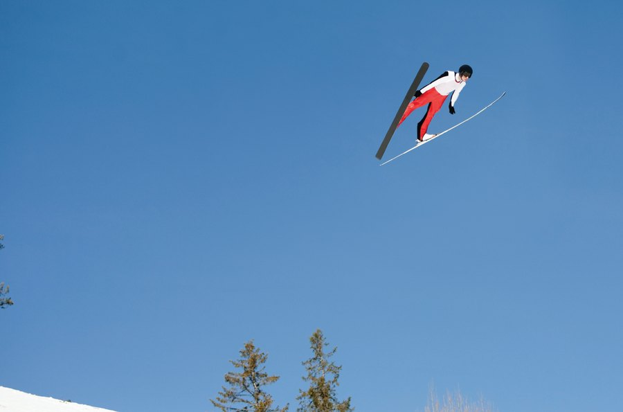
스키 점프를 하는 동안 선수의 은/는 계속 변한다. 이것은 경사면과 도약대의 모양에 의한 영향도 받지만, 가장 큰 원인은 선수가 의 영향을 받기 때문이다.
운동장을 굴러가던 축구공이 멈추는 까닭은?
교과서 178쪽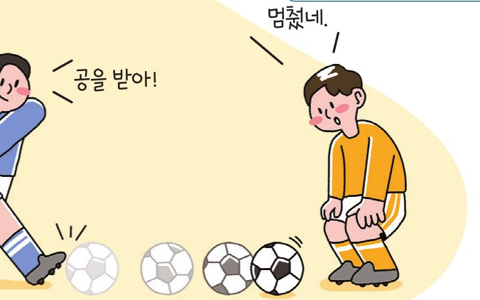
친구가 찬 축구공이 운동장을 굴러가다가 점점 느려지더니 멈췄다. 운동장을 굴러가던 축구공이 멈추는 까닭은 무엇일까?
운동장에서 공을 차면 공의 운동 방향과 반대 방향으로 마찰력이 작용하여 공의 속력이 변하다가 멈춘다. 공에 작용한 힘과 공의 운동은 어떤 관계가 있을까? 물체에 작용하는 알짜힘과 물체의 운동 사이의 관계를 알아보자.
힘과 운동의 관계 알아보기
교과서 178쪽🎯 물체에 작용하는 알짜힘과 물체의 운동 사이의 관계를 설명할 수 있다.
🧰 준비물: 탁구공, 홈통, 받침대, 휴대용 선풍기, 종이테이프
- 1책상 위에 놓은 홈통에 탁구공을 놓고 손으로 밀어서 보낸다.
- 2홈통과 나란한 방향으로 바람을 보내 공의 운동 상태를 관찰해 보자.
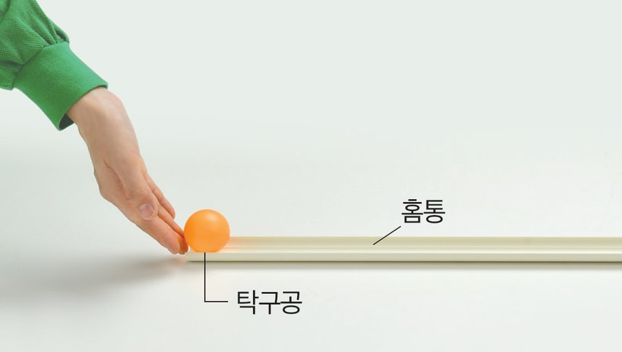
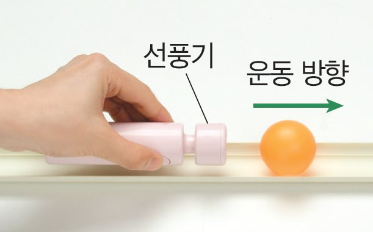
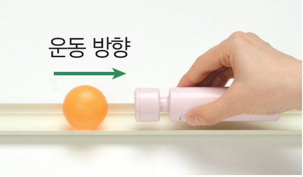
- 3홈통 끝을 받침대에 올려 빗면을 만든다.
- 4빗면에 탁구공을 놓아 굴린 후 공의 운동 방향과 나란하지 않은 방향(수직, 비스듬히)으로 바람을 보내 공의 운동 상태를 관찰해 보자.
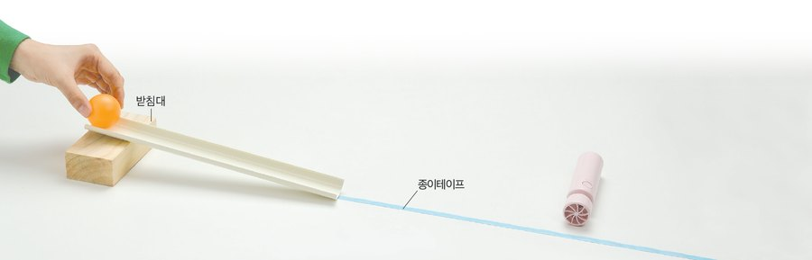
🌬️ 가상 실험: 굴러가는 탁구공에 바람을 보내 보자
바람의 방향을 고르고 「공 굴리기」를 눌러 보자. 일정한 시간 간격으로 찍힌 공의 위치(흐린 공)를 보면 속력과 운동 방향의 변화를 알 수 있어요. 점 사이 간격이 넓어지면 빨라진 거예요!
| 바람의 방향 | 같은 방향 | 반대 방향 | 수직 방향 | 비스듬한 방향 |
|---|---|---|---|---|
| 관찰 결과 | ? | ? | ? | ? |
📝 질문
▶ 공과 나란한 방향으로 바람을 보낼 때는 탁구공의 운동 방향은 , 속력이 . 탁구공의 운동 방향과 같은 방향으로 바람을 보내면 탁구공의 속력이 , 반대 방향으로 바람을 보내면 탁구공의 속력이 . 탁구공의 운동 방향과 나란하지 않은 방향으로 바람을 보내면 탁구공의 과 이 변한다.
1. 힘이 작용할 때 물체의 운동
교과서 179쪽탁구공의 운동 방향과 나란한 방향으로 바람을 보내면 탁구공의 속력이 변한다. 하지만 탁구공의 운동 방향과 수직 방향으로 바람을 보내면 탁구공의 운동 방향이 변하고, 탁구공의 운동 방향과 비스듬한 방향으로 바람을 보내면 탁구공의 속력과 운동 방향이 모두 변한다.
빈칸을 채운 뒤 「정답 확인」을 눌러 보자.
운동 방향과 나란한 방향으로
힘이 작용할 때
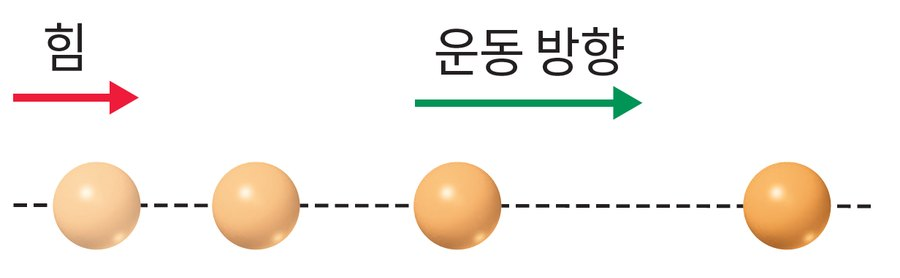
➡ 물체의 이/가 변한다.
운동 방향과 수직 방향으로
힘이 작용할 때
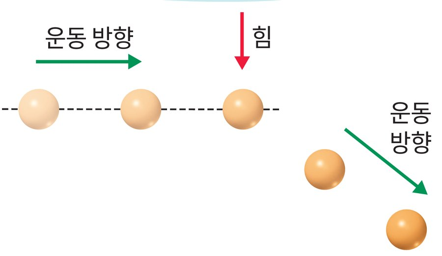
➡ 물체의 이/가 변한다.
운동 방향과 비스듬한 방향으로
힘이 작용할 때
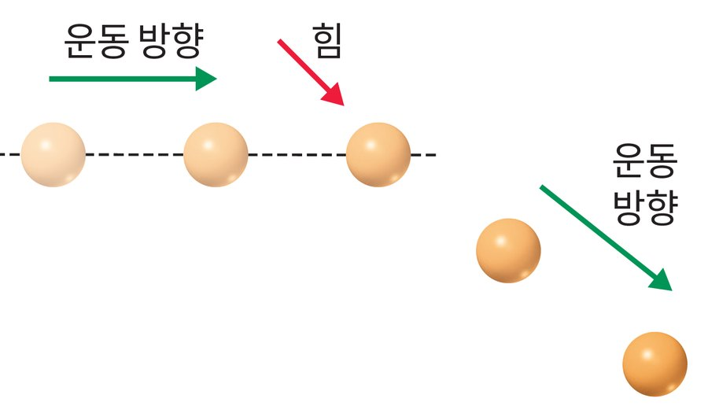
➡ 물체의 속력과 운동 방향이 모두 변한다.
그림 Ⅴ-16 힘이 작용한 물체의 운동
➡️ 운동 방향과 같은 방향의 힘
물체의 속력이 증가한다.
예) 빗면에서 굴러 내리는 공, 다이빙하는 사람 등
⬅️ 운동 방향과 반대 방향의 힘
물체의 속력이 감소한다.
예) 브레이크를 밟은 자동차, 위로 던져 올라가는 공 등
2. 일상생활에서 힘이 작용할 때 물체의 운동
교과서 179쪽사진 속 물체에 힘이 어느 방향으로 작용하는지 생각하며 빈칸을 채워 보자.
스키 점프 선수
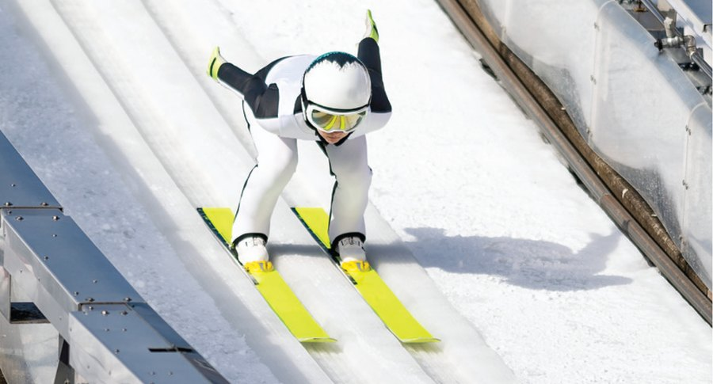
선수가 빗면을 내려올 때 선수의 운동 방향과 방향으로 힘이 작용해 속력이 변하는 운동을 한다.
대관람차
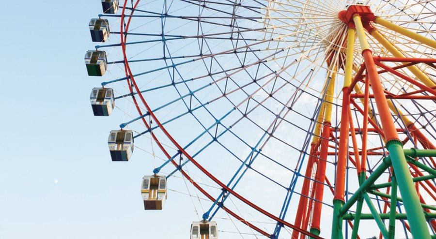
관람차의 운동 방향과 방향으로 힘이 작용해 운동 방향이 변하는 운동을 한다.
농구 선수가 비스듬히 던진 공
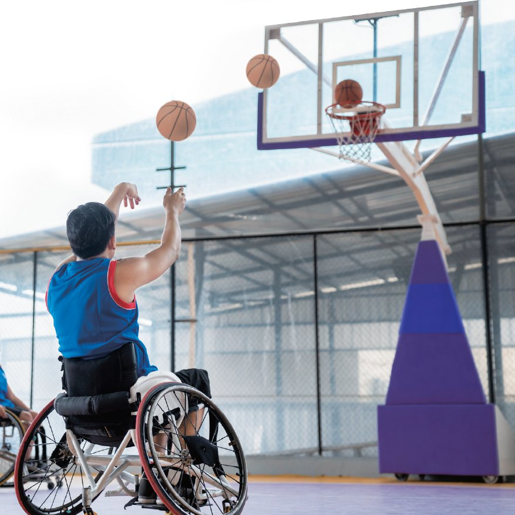
공의 운동 방향과 방향으로 힘이 작용해 속력과 운동 방향이 모두 변하는 운동을 한다.
그림 Ⅴ-17 일상생활에서 힘이 작용할 때 물체의 운동
물체의 운동을 분류해 보자
학습 목표 2다음 물체의 운동을 속력이 변하는 운동, 운동 방향이 변하는 운동, 속력과 운동 방향이 모두 변하는 운동으로 분류해 보자.
탐구 ‘여러 가지 물체의 운동 조사하기’(교과서 180~181쪽)에서 학교, 놀이공원, 운동 경기장 등에서 직접 운동 사례를 찾아 분류하고 포스터로 발표해 볼 거예요. 오늘 분류한 방법을 기억해 두자!
조금 더 풀어볼까요?
힘과 운동 연습 문제물체에 작용하는 알짜힘이 0이 아니면 물체의 운동 상태가 변한다.